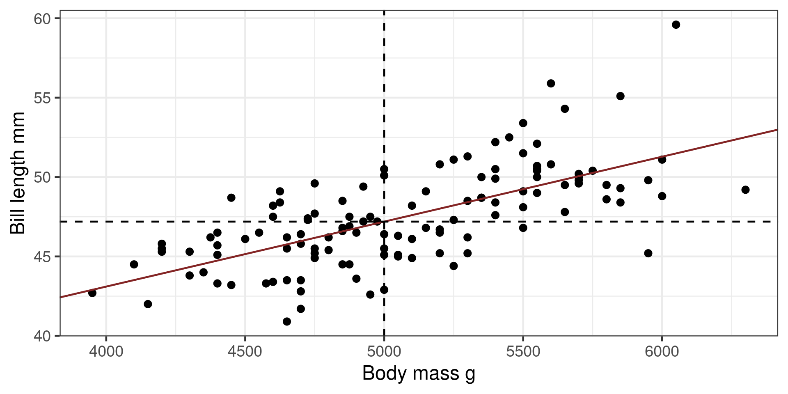

[1] 0.5951Linear Regression 1
Bio300B Lecture 7
Richard J. Telford (Richard.Telford@uib.no)
Institutt for biovitenskap, UiB
17 August 2025
Bivariate descriptive statistics
Measures of association
- covariance
- correlation
Use with
- two continuous variables
- paired data
- unclear direction of causality

Covariance
Association between two variables
\(S_{xy} = \frac{\Sigma (x_i - \mu_x)(y_i - \mu_y)}{n - 1}\)
\(S_{xy} = S_{yx}\)
- -inf, 0, +inf
- + = positive association
- - = negative association
cov()
Correlation
Pearson coefficient of correlation
Standardised association
- \(S_{xy}\) - covariance of x & y
- \(S_x^2\) - variance of x
- \(S_y^2\) - variance of y
\(r_{xy} = \frac{S_{xy}}{\sqrt{S_x^2S_y^2}}\)
\(r_{xy} = r_{yx}\)
- -1, 0, +1
- + = positive association
- - = negative association
Correlations in R
bill_length_mm bill_depth_mm flipper_length_mm body_mass_g
bill_length_mm 1.0000 -0.2351 0.6562 0.5951
bill_depth_mm -0.2351 1.0000 -0.5839 -0.4719
flipper_length_mm 0.6562 -0.5839 1.0000 0.8712
body_mass_g 0.5951 -0.4719 0.8712 1.0000\(R^2\)
Coefficient of determination
\[R^2 = r^2\]
- 0 - 1
- proportion of variance explained
- \(R^2\) = 0.5, 50% of variation in data explained
Testing a Correlation
Pearson's product-moment correlation
data: penguins$bill_length_mm and penguins$body_mass_g
t = 14, df = 340, p-value <2e-16
alternative hypothesis: true correlation is not equal to 0
95 percent confidence interval:
0.5220 0.6595
sample estimates:
cor
0.5951 Not robust to outliers
- Non-parametric correlation (Spearman Rank, Kendall Tau)
- Bootstrap estimation of confidence interval
Least squares regression
Describe relationship between response y and predictor x \[y = β_0 + β_1x\]

We want the parameters \(\beta\)
\[y_i = \beta_0 + \beta_1x_i + \epsilon_i \]
- \(y\) = continuous response
- \(x\) = continuous or categorical predictor
- \(i = 1, ..., n\) observations - \((xi, yi)\) observation pairs
- \(ε_i\) = residual at \(i\)
- \(β_0\) = mean, intercept
- \(β_1\) = effect, slope
Residuals are actual - predicted
Criteria
- \(\epsilon \sim N(0, \sigma)\)
- \(y \sim N(\mu, \sigma)\)
Use when
Response variable is continuous
Predictor variable(s) are continuous or categorical
Observations are independent
Other assumptions are met
Direction of causality is clear
Want to make predictions
Want effect size as slope or differences between groups
Correlation or linear model?
Studying foraminifera test composition and temperature
- Experiment with forams in tanks at different temperatures.
- foram Mg concentration, tank temperature
- foram Mg concentration, foram Ba concentration
- Observational study of forams collected from the ocean.
- foram Mg concentration, Ocean temperature
- Ocean temperature, ocean Mg concentration
- foram Mg concentration, foram species
Which distribution matters?
#| label: ydistribution-lm-app
#| standalone: true
#| viewerHeight: 600
library(shiny)
ui <- fluidPage(
# Application title
titlePanel("Which distribution is important?"),
sidebarLayout(
sidebarPanel(
radioButtons("dist", "Predictor distributor", choices = c("Normal", "Skewed", "Bimodal"), selected = "Normal"),
checkboxInput("show_residuals", label = "Show residuals", value = FALSE),
radioButtons("residual_plot", "Residual plot", choices = c("None", "Histogram", "QQplot"), selected = "None")
),
# Show a plot of the generated distribution
mainPanel(
plotOutput("distPlot")
)
))
horizHist <- function(
Data,
breaks="Sturges",
freq=TRUE,
plot=TRUE,
col=par("bg"),
border=par("fg"),
las=1,
xlab=if(freq)"Frequency" else "Density",
main=paste("Histogram of",deparse(substitute(Data))),
ylim=range(HBreaks),
labelat=pretty(ylim),
labels=labelat,
... )
{
a <- hist(Data, plot=FALSE, breaks=breaks)
HBreaks <- a$breaks
hpos <- function(Pos) (Pos-HBreaks[1])*(length(HBreaks)-1)/ diff(range(HBreaks))
if(plot)
{
barplot(if(freq)a$counts else a$density, space=0, horiz=TRUE, ylim=hpos(ylim), col=col, border=border,
xlab=xlab, main=main, ...)
}
} # End of function
server <- function(input, output, session) {
x <- reactive(switch(input$dist,
Normal = rnorm(50),
Skewed = exp(rnorm(50)),
Bimodal = c(rnorm(25, mean = 1, sd = 0.4), rnorm(25, mean = 5, sd = 0.4))
))
y <- reactive(rnorm(length(x()), mean = x()))
mod <- reactive(lm(y() ~ x()))
output$distPlot <- renderPlot({
layout(mat = matrix(c(1, 2, 4, 0, 3, 0),
nrow = 3,
ncol = 2),
heights = c(1, 3, 3), # Heights of the two rows
widths = c(3, 1)) # Widths of the two columns
par(mar=c(1.2,2,2,1), cex = 1.3, tcl = -0.1, mgp = c(1.5, 0.2, 0))
par(mar = c(0, 3, 0, 0))
hist(x(), axes = FALSE, main = "", ylab = "", xlab = "", breaks = 10)
par(mar = c(3, 3, 0, 0))
plot(x(), y(), xlab = "Predictor", ylab = "Response")
abline(coef = coef(mod()))
if (input$show_residuals) {
segments(x0 = x(), y0 = y(), x1 = x(), y1 = fitted(mod()))
}
par(mar = c(3, 0.2, 0, 0))
horizHist(y(), axes = FALSE, main = "", ylab = "", xlab = "", col = "lightgrey", breaks = 10)
if (input$residual_plot == "Histogram") {
par(mar = c(3, 3, 1, 0))
hist(resid(mod()), freq = FALSE)
x_norm <- seq(-10, 10, length.out = 100)
lines(x_norm, dnorm(x_norm, mean = 0, sd = sd(resid(mod()))), col = "#832424", xlab = "Residuals", main = "Histogram of residuals")
} else if (input$residual_plot == "QQplot") {
par(mar = c(3, 3, 1, 0))
plot(mod(), which = 2, id.n = 0)
}
})
}
shinyApp(ui, server)Estimating \(\beta\)
Choose \(\beta\) that minimise the sum of squares of residuals
\[\sum_{i = 1}^{n}\epsilon_i^2 = \sum_{i = 1}^{n}(y_i - (\beta_0 + \beta_1x_i))^2\]
#| label: regression-line-ss-app
#| standalone: true
#| viewerHeight: 600
library(shiny)
ui <- fluidPage(
# Application title
titlePanel("Minimise the sum of squared residuals"),
sidebarLayout(
sidebarPanel(
radioButtons("residuals", "Show residuals", choices = c("None", "Residuals", "Squared-residuals"), selected = "None"),
checkboxInput("best", "Show best model"),
textOutput("slope"),
textOutput("intercept")
),
# Show a plot of the generated distribution
mainPanel(
plotOutput("plot", click = "plot_click"),
h3(textOutput("SumSq"))
)
))
server <- function(input, output, session) {
# make some data
set.seed(Sys.Date())
data <- data.frame(x = 1:10, y = rnorm(10, 1:10))
xlab <- "Predictor"
ylab <- "Response"
v <- reactiveValues(
click1 = NULL, # Represents the first mouse click, if any
intercept = NULL, # After two clicks, this stores the intercept
slope = NULL, # after two clicks, this stores the slope,
pred = NULL,
resid = NULL
)
# Handle clicks on the plot
observeEvent(input$plot_click, {
if (is.null(v$click1)) {
# We don't have a first click, so this is the first click
v$click1 <- input$plot_click
} else {
# We already had a first click, so this is the second click.
# Make slope and intercept from the previous click and this one.
v$slope <- (input$plot_click$y - v$click1$y)/(input$plot_click$x - v$click1$x)
v$intercept <- (input$plot_click$y + v$click1$y)/2 - v$slope * (input$plot_click$x + v$click1$x)/2
# predictions & residuals
v$pred <- v$intercept + v$slope * data$x
v$resid <- v$pred - data$y
# And clear the first click so the next click starts a new line.
v$click1 <- NULL
}
})
output$plot <- renderPlot({
par(cex = 1.5, mar = c(3, 3, 1, 1), tcl = -0.1, mgp = c(2, 0.2, 0))
plot(data, pch = 16, xlab = xlab, ylab = ylab)
if (input$best) {
mod <- lm(y ~ x, data = data)
abline(mod, colour = "navy", lty = "dashed")
}
if (!is.null(v$intercept)) {
abline(a = v$intercept, b = v$slope)
if (input$residuals == "Residuals") {
segments(
x0 = data$x,
x1 = data$x,
y0 = data$y,
y1 = v$pred
)
} else if (input$residuals == "Squared-residuals") {
w <- par("pin")[1] / diff(par("usr")[1:2])
h <- par("pin")[2] / diff(par("usr")[3:4])
asp <- w/h
rect(xleft = ifelse(v$resid < 0, data$x, data$x + v$resid / asp),
ybottom = ifelse(v$resid < 0, v$pred, data$y),
xright = ifelse(v$resid < 0, data$x + v$resid / asp, data$x),
ytop = ifelse(v$resid < 0, data$y, v$pred),
col = "#83242455", border = "#832424")
}
}
})
output$SumSq <- renderText({
if (is.null(v$click1) && is.null(v$intercept)) { # initial state
"Click on the plot to start a line"
} else if (!is.null(v$click1)) { #after one click
"Click again to finsh a line"
} else if(input$residuals == "None") {
"Use radio buttons to display residuals"
} else {
paste0("Sum of squares = ", signif(sum(v$resid ^ 2), 3))
}
})
output$slope <- renderText({
if (!is.null(v$slope)) {
paste0("Slope = ", signif(v$slope, 3))
} else {
""
}
})
output$intercept <- renderText({
if (!is.null(v$intercept)) {
paste0("Intercept = ", signif(v$intercept, 3))
} else {
""
}
})
}
shinyApp(ui, server)Calculating \(\beta\)
\[\beta_1 = \frac{s_{xy}}{s_x^2}\] Covariance of xy / variance of x
\[\beta_0 = mean(y) - \beta_1 mean(x)\]
Fitting a least-squares model in R
Summary()
Call:
lm(formula = bill_length_mm ~ body_mass_g, data = gentoo)
Residuals:
Min 1Q Median 3Q Max
-5.880 -1.508 -0.058 1.312 8.111
Coefficients:
Estimate Std. Error t value Pr(>|t|)
(Intercept) 2.67e+01 2.11e+00 12.69 <2e-16 ***
body_mass_g 4.09e-03 4.13e-04 9.91 <2e-16 ***
---
Signif. codes: 0 '***' 0.001 '**' 0.01 '*' 0.05 '.' 0.1 ' ' 1
Residual standard error: 2.3 on 121 degrees of freedom
(1 observation deleted due to missingness)
Multiple R-squared: 0.448, Adjusted R-squared: 0.443
F-statistic: 98.1 on 1 and 121 DF, p-value: <2e-16Variance partitioning
Total sum of squares \(SS_{total}\)
Squared differences of observation from mean
Residual sum of squares \(SS_{residual}\)
Squared differences of observation from regression line
Regression sum of squares \(SS_{regression}\)
Squared differences of regression line from mean

\(R^2\)
Coefficient of determination
Coefficient of multiple correlation
\[R^2 = 1 - \frac{\color{green}{SS_{residual}}}{\color{red}{SS_{total}}}\]
- 0 - 1
- \(R^2\) = 0.5 – 50% of variation in data explained
- Always increases with more predictors
Adjusted \(R^2\)
Corrects for number of parameters
\[
R^2_{adj} = 1 - \frac{(1-R^2)(n-1)}{n-p-1}
\] \(R^2\) = R squared
\(n\) = number of observations
\(p\) = number of parameters
Only increases if useful predictors added
Can be negative
Using Anova
\[F = \frac{\color{blue}{SS_{regression}}/df_{regression}}{\color{green}{SS_{residual}}/df_{residual}}\]
The F distribution
#’ F-test app #’ @description #’ A shiny app to visualise how f-distribution changes with the number of #’ regression and residual degrees of freedom. #’ #’ @import shiny #’ @import bslib #’ @importFrom graphics par polygon lines text #’ @examples #’
#’ @export
f_test_app <- function(){ ui <- fluidPage(
# Application title
titlePanel("F test"),
# Sidebar with a slider input for number of bins
sidebarLayout(
sidebarPanel(
HTML('<h3><span>SS<sub>regression</sub>/df<sub>regression</sub></span></h3>
<span class="symbol">/</span>
<h3><span class="bottom">SS<sub>residual</sub>/df<sub>residual</sub></span></h3> '),
sliderInput("numerator",
"Regression degrees of freedom:",
min = 1,
max = 10,
round = TRUE,
value = 1),
sliderInput("denominator",
"Residual degrees of freedom:",
min = 1,
max = 10,
round = TRUE,
value = 5),
radioButtons("alpha",
"\u03b1:",
c("p = 0.05" = "0.05", "p = 0.01" = "0.01")
)
),
# Show a plot of the generated distribution
mainPanel(
plotOutput("distPlot")
)
))
Define server logic required to draw a histogram
f_test_server <- function(input, output) {
output$distPlot <- renderPlot({
# generate bins based on input$bins from ui.R
axis_max <- 500
xmax <- min(axis_max,
qf(p = 0.995, df1 = input$numerator, df2 = input$denominator))
x <- seq(0, ceiling(xmax), length.out = 200)
y <- df(x, df1 = input$numerator, df2 = input$denominator)
x <- x[is.finite(y)]
y <- y[is.finite(y)]
xthresh <- qf(p = 1 - as.numeric(input$alpha),
df1 = input$numerator, df2 = input$denominator)
if(xthresh > axis_max) {
xthresh <- NA_real_
x2 <- numeric(0)
} else {
x2 <- seq(xthresh, ceiling(xmax), length.out = 100)
}
y2 <- df(x2, df1 = input$numerator, df2 = input$denominator)
df2 <- data.frame(x = x2, y = y2)
par(par_list)
plot(x, y, type = "n",
xlab = expression(italic(F)~value),
ylab = "Density")
polygon(c(x[1], x, x[length(x)]), c(0, y, 0), col = "grey80", border = NA)
polygon(c(x2[1], x2, x2[length(x2)]), c(0, y2, 0), col = "#832424", border = NA)
lines(x, y)
text(xthresh,
y2[1] + 0.05 * (max(y)- y2[1]),
labels = bquote(italic(F)[.(input$numerator)*','~.( input$denominator)*';'~.(input$alpha)]==.(round(xthresh, 2))),
adj = 0
)
# annotate(geom = "text", x = , y = y2[1] + 0.05 * (max(y[is.finite(y)])- y2[1]), label =, hjust = 0, vjust = 0, parse = TRUE, size = 5)
})} # Run the application shinyApp(ui = ui, server = f_test_server) }
Categorical predictors
Does penguin body mass depend on species?
Predictor = species (categorical)
Response = body mass (continuous)
Hypotheses
\[H_0: \mu_{Adelie} = \mu_{Chinstrap} = \mu_{Gentoo}\] \(H_A\) At least two of the means differ
Error in `geom_violin()`:
! Problem while setting up geom aesthetics.
ℹ Error occurred in the 1st layer.
Caused by error in `loadNamespace()`:
! there is no package called 'colorspace'Fitting the model
Anova for categorical variables
Anova Table (Type II tests)
Response: body_mass_g
Sum Sq Df F value Pr(>F)
species 1.47e+08 2 344 <2e-16 ***
Residuals 7.24e+07 339
---
Signif. codes: 0 '***' 0.001 '**' 0.01 '*' 0.05 '.' 0.1 ' ' 1At least two groups differ
summary for categorical variables
Call:
lm(formula = body_mass_g ~ species, data = penguins)
Residuals:
Min 1Q Median 3Q Max
-1126.0 -333.1 -33.1 316.9 1224.0
Coefficients:
Estimate Std. Error t value Pr(>|t|)
(Intercept) 3700.7 37.6 98.37 <2e-16 ***
speciesChinstrap 32.4 67.5 0.48 0.63
speciesGentoo 1375.4 56.1 24.50 <2e-16 ***
---
Signif. codes: 0 '***' 0.001 '**' 0.01 '*' 0.05 '.' 0.1 ' ' 1
Residual standard error: 462 on 339 degrees of freedom
(2 observations deleted due to missingness)
Multiple R-squared: 0.67, Adjusted R-squared: 0.668
F-statistic: 344 on 2 and 339 DF, p-value: <2e-16Summary shows difference between
- Adelie and Chinstrap
- Adelie and Gentoo
Not between
- Chinstrap and Gentoo
Forcing the reference level
Very useful when you have a control
Multiple comparisons
- Don’t change the order of the levels of the predictor variable to compare all groups against each other
- use a post-hoc multiple comparisons test
Error in library(package, pos = pos, lib.loc = lib.loc, character.only = TRUE, : there is no package called 'multcomp'Error in glht(mod2, linfct = mcp(species = "Tukey")): could not find function "glht"Error: object 'mc' not foundError: object 'mc' not foundAssumptions of Least Squares
- The relationship between the response and the predictors is ~linear.
- The residuals have a mean of zero.
- The residuals have constant variance (not heteroscedastic).
- The residuals are independent (uncorrelated).
- The residuals are normally distributed.
Violation of assumptions cannot be detected using the t or F statistics or R2
Diagnostic plots
plot()base R diagnostic plotsautoplot()fromggfortify- same plots but prettiercheck_model()fromperformance- more diagnosticsDHARMapackage - very powerful diagnostics
performance
Posterior predictive checks
Check for systematic discrepancies between real and simulated data
- green - density of observed response
- blue - density of simulated response
Want green line to resemble blue lines
Error: Package `see` required for model diagnostic plots.
Please install it by running `install.packages("see")`.Error: object 'diagnostic_plots' not foundResidual vs fitted
Check for
- Outliers
- Variations in the mean residual
Want flat line
Error: object 'diagnostic_plots' not foundQuantile-quantile plot
QQ plots compare two samples to determine if they are from the same distribution.
Check for
- Non-normal distribution of the residuals
Points will lie on straight line if normally distributed
Error: object 'diagnostic_plots' not foundScale-location plot
Square root of the absolute standardised residuals
Check for
- Unequal variance = Heteroscedasticity
Want flat line
Error: object 'diagnostic_plots' not foundResiduals vs leverage
Plot of standardised residuals against leverage, with contours of Cooks distance
Observations with extreme leverage should be checked
Error: object 'diagnostic_plots' not foundPredictions
\[y = \beta_0+\beta_1x\]

Predict
1 2 3 4 5 6 7 8 9 10 11 12 13
45.15 50.06 44.94 50.06 48.83 45.35 46.38 48.01 44.74 47.81 45.76 49.44 45.76
14 15 16 17 18 19 20 21 22 23 24 25 26
50.67 43.92 50.67 43.72 52.51 46.38 48.63 50.06 47.19 44.74 47.40 47.19 47.60
27 28 29 30 31 32 33 34 35 36 37 38 39
43.51 49.85 45.56 49.44 48.22 45.97 47.40 51.49 47.81 48.83 46.99 48.22 44.53
40 41 42 43 44 45 46 47 48 49 50 51 52
48.63 42.90 50.06 44.33 46.17 49.44 46.78 43.92 48.83 47.60 48.42 46.58 48.42
53 54 55 56 57 58 59 60 61 62 63 64 65
44.74 47.19 46.78 47.40 44.33 47.19 44.94 49.44 43.92 48.42 44.74 49.85 45.97
66 67 68 69 70 71 72 73 74 75 76 77 78
50.06 45.76 50.47 45.97 49.44 46.17 47.19 47.60 48.01 45.97 50.47 45.56 51.28
79 80 81 82 83 84 85 86 87 88 89 90 91
46.17 51.08 45.66 49.03 46.07 48.63 46.17 49.65 45.56 48.42 46.68 49.44 46.99
92 93 94 95 96 97 98 99 100 101 102 103 104
48.83 46.17 49.85 46.58 48.01 46.89 46.68 45.66 48.22 46.58 49.65 47.09 49.24
105 106 107 108 109 110 111 112 113 114 115 116 117
46.07 49.24 45.97 49.24 45.46 49.24 47.19 51.08 45.76 49.24 44.64 50.67 46.68
118 119 121 122 123 124
51.28 46.89 46.58 50.26 48.01 48.83 Predict with new data
Predictions with standard errors
Uncertainty of the mean
Predictions with confidence interval
Often easier to use broom::augment()

Predictions interval
Where will a new observation probably be